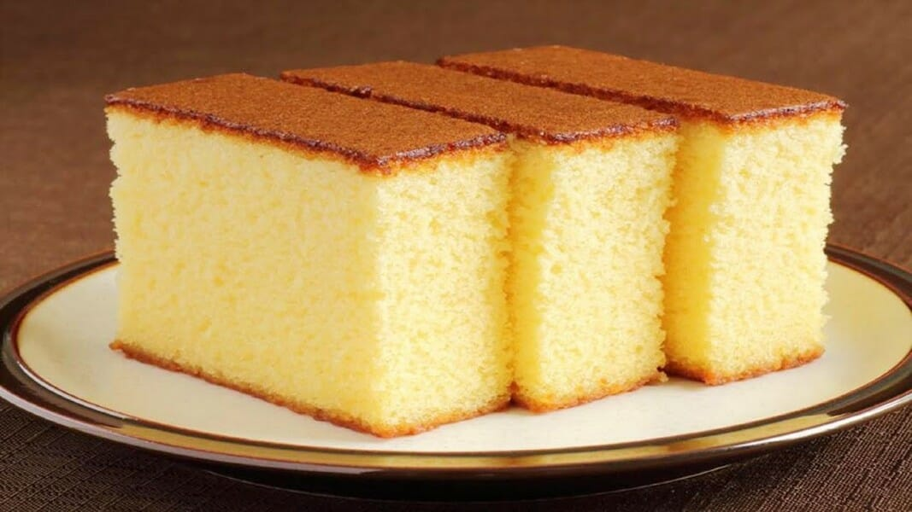

Simple Sponge Cake
Ingredients
- 3 eggs
- 100g castor sugar
- 85g self-raising flour
Notes on ingredients
- Castor Sugar
- Finely granulated white sugar
- Self-raising flour
- A pre-mixed combination of flour and leavening agents (usually salt and baking powder).
Method
- Preheat the oven to 190oC.
- Grease a 20cm round cake pan
- In a medium bowl, whip together the eggs and castor sugar until fluffy
- Fold in flour.
- Pour mixture into the prepared pan.
- Bake for 20 minutes in the preheated oven, or until the top of the cake springs back when lightly pressed.
- Cool in the pan over a wire rack.
